What is GLTF
{kind=link}
Overview
glTF는 Khronos Group에 의해 디자인 및 정의된 것으로, 네트워크를 통한 3D 컨텐츠의 효율적인 전송을 위한 것이다. glTF의 코어는 JSON 파일이며, 3D 모델들을 포함한 하나의 씬 구조와 구성을 나타낸다.
scenes, nodes - 씬의 기본 구조
cameras - 씬의 뷰 설정
meshes - 3D 오브젝트의 기하학적 구조 (=Geometry)
buffers, bufferViews, accessors - 데이터 레퍼런스와 데이터 레이아웃 설명
materials - 어떻게 오브젝트가 렌더링되어야 하는지에 대한 정의
textures, images, samplers - 오브젝트의 표면 모양
skins - 버텍스 스키닝을 위한 정보
animations - 시간 경과에 따른 프로퍼티 변경
이러한 요소들은 배열에 포함되어 있으며, 오브젝트 간의 참조는 인덱스를 통해 이루어진다.
또한, 모든 에셋을 하나의 단일 바이너리 glTF 파일로 저장하는 것이 가능하다.(=glb) 이 경우, JSON 데이터는 버퍼 또는 이미지의 바이너리 데이터에 해당하는 문자열로 저장된다.
Concepts
glTF 에셋의 탑-레벨 요소 간 관계는 아래와 같다.
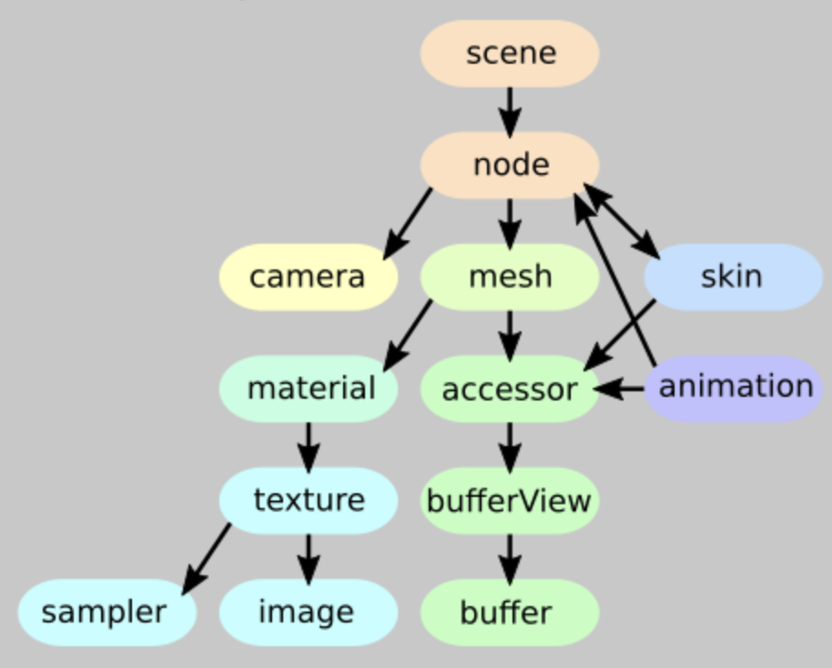
바이너리 데이터 참조
glTF 에셋의 이미지와 버퍼는 외부 파일을 참조할 수 있다.
"buffers": [
{
"uri": "buffer01.bin",
"byteLength": 102040,
},
],
"images": [
{
"uri": "image01.png"
}
]
buffers는 지오메트리 또는 애니메이션 데이터를 포함하는 바이너리 파일을 가리킨다.
images는 모델의 텍스쳐 데이터를 담고있는 이미지 파일을 가리킨다.
데이터는 URI를 통해 참조될 수 있으나, 데이터 URI를 통해 JSON 내에서 직접 추가될 수도 있다. 데이터 URI는 아래의 형태로 MIME 타입을 정의하며, base64 인코딩된 데이터를 포함한다.
// Buffer data:
"data:application/gltf-buffer;base64,AAABAAIAAgA..."
// Image data:
"data:image/png;base64,iVBORw0K..."
Scenes, Nodes
glTF JSON은 씬(scene)들을 포함할 수 있다. (+ 선택적으로, 기본 씬을 설정)
각각의 씬은 노드의 인덱스 목록을 포함할 수 있다. 각각의 노드는 자식(children)의 인덱스 목록을 포함할 수 있다.
"scene": 0,
"scenes": [
{
"nodes": [0, 1, 2] // 해당 씬이 루트가 됨
}
],
"nodes": [
{
"children": [3, 4], // 첫번째 씬에 의해 참조
...
}
{
...
},
{
...
},
{
... // 첫번째 노드에 의해 참조
},
{
... // 첫번째 노드에 의해 참조
}
]
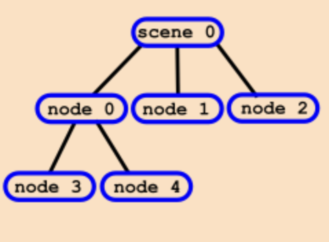
하나의 노드는 하나의 로컬 트랜스폼을 포함할 수 있다. 이는 하나의 열 우선(column-major) 행렬 배열로 주어지거나, 각각의 변환(translation), 회전(rotation), 스케일(scale)로 전달될 수 있다.
이 때, rotation은 쿼터니언의 형태로 전달된다.
이로부터, 한 노드의 전역 트랜스폼은 루트에서 각 노드까지의 경로에 있는 모든 로컬 트랜스폼의 곱을 통해 구할 수 있다.
"nodes": [
{
// 하나의 행렬로 주어지거나
"matrix": [
1.0, 0.0, 0.0, 0.0,
0.0, 1.0, 0.0, 0.0,
0.0, 0.0, 1.0, 0.0,
1.0, 2.0, 3.0, 1.0
],
// ...
},
{ // 또는 TRS를 각각 따로 전달
"translation": [1.0, 2.0, 3.0],
"rotation": [0.0, 0.0, 0.0, 1.0],
"scale": [1.0, 1.0, 1.0],
// ...
}
]
각 노드는 하나의 메시 또는 카메라를 가리킬 수 있다. 이는 각각의 메시(mesh)와 카메라(camera)의 인덱스로 전달된다.
해당 요소들은 이 노드에 연결되며, 이 요소의 인스턴스들은 생성된 이후 노드의 전역 트랜스폼에 기반하여 트랜스폼된다.
"nodes": [
{
"mesh": 4,
// ...
},
{
"camera": 2,
// ...
}
]
노드의 TRS 프로퍼티는 한 애니메이션의 타겟이 될 수도 있다. 이 경우 애니메이션은 시간의 경과에 따라 한 속성이 어떻게 변화하는지에 대해 정의한다. 연결된 오브젝트들은 이를 따라, 움직이는 오브젝트 또는 카메라 비행을 모델링할 수 있다.
노드들은 버텍스 스키닝(Vertex Skinning)에 사용될 수도 있다. 한 노드 구조는 한 애니메이션 캐릭터의 스켈레톤을 정의할 수 있다. 이 경우, 노드는 하나의 메쉬와 하나의 스킨을 참조하게 되며, 참조된 스킨은 현재의 스켈레톤 포즈에 기반하여 메쉬가 어떻게 디폼(deform)되는지에 대한 추가적인 정보를 담게 된다.
Meshes
메쉬(mesh)는 하나 이상의 프리미티브(primitive)를 포함한다. 프리미티브는 메쉬를 렌더링하는데에 필요한 기하학적 데이터를 참조한다.
"meshes": [
{
"primitives": [
{
"mode": 4,
"indices": 3,
"attributes": {
"POSITION": 0,
"NORMAL": 2,
},
"material": 0
}
]
}
]
각각의 메쉬 프리미티브는 렌더링 모드를 갖는다. 이는 렌더링이 POINTS, LINES, TRIANGLES 등 어떤 방식으로 이루어지는지를 정의한다.
프리미티브는 또한 이 데이터에 대한 액세서의 인덱스를 사용하여 인덱스(index, indices)와 버텍스의 어트리뷰트(attributes)을 참조한다.
렌더링에 사용될 머테리얼(material) 역시 주어져야 하며, 이는 머테리얼의 인덱스로 전달된다.
각 어트리뷰트는 어트리뷰트 데이터를 포함하는 액세서의 인덱스와 어트리뷰트명을 매핑하여 정의된다. (ex. POSITION은 0번 액세서를 참조한다.)
이 데이터는 메쉬를 렌더링할 때 버텍스 어트리뷰트로 사용된다.
예를 들어, 버텍스들의 POSITION과 NORMAL을 정의하는 어트리뷰트는 다음의 형태가 된다.
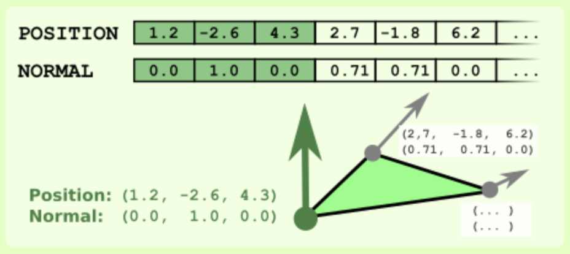
메쉬는 여러 개의 모프 타겟(Morph Target)을 정의할 수 있다. 이러한 모프 타겟은 원본 메쉬의 디포메이션을 정의한다.
{
"primitives": [
{
...
"targets": [
{
"POSITION": 11,
"NORMAL": 13,
},
{
"POSITION": 21,
"NORMAL": 23
}
]
}
],
"weights": [0, 0.5]
}
메쉬에 모프 타깃을 정의하기 위해, 각각의 메쉬 프리미티브는 타겟(target)의 배열을 가질 수 있다.
이는 어트리뷰트의 명칭을 대상 지오메트리의 변위(displacement)를 포함하는 액세서의 인덱스에 매핑하는 딕셔너리다.
메쉬는 또한 가중치(weight)의 배열을 가질 수 있고, 이는 각 모프 타깃이 최종적으로 렌더링되는 메시의 상태에 어느 정도 기여할 것인지를 정의한다.
다른 가중치를 가진 여러 개의 모프 타깃을 조합하는 것도 가능하다. 예를 들어, 한 캐릭터의 다양한 표정에 대한 모델링을 하는 경우가 이에 해당한다. 이 때는 애니메이션으로 가중치를 수정하여 지오메트리의 여러 상태 간에 보간할 수 있다.
Buffers, BufferViews, Accessors
버퍼(buffer)는 3D 모델, 애니메이션, 스키닝에서 기하학적으로 사용되는 데이터를 담고 있다.
버퍼 뷰(bufferView)는 이 데이터의 구조적인 정보를 포함한다.
액세서(accessor)란 데이터의 정확한 타입과 레이아웃을 정의한다.
"buffers": [
{
"byteLength": 35,
"uri": "buffer01.bin"
}
],
"bufferViews": [
{
"buffer": 0, // 위쪽 buffers 배열의 첫번째를 참조
"byteOffset": 4,
"byteLength": 28,
"byteStride": 12,
"target": 34963,
}
],
"accessors": [
{
"bufferView": 0, // 위쪽 bufferViews 배열의 첫번째를 참조
"byteOffset": 0,
"type": "VEC2",
"componentType": 5126,
"count": 2,
"max": [0.1, 0.2],
"min": [0.9, 0.8]
}
]
각각의 버퍼는 URI를 통해 바이너리 데이터 파일을 참조한다. 이는 주어지는 byteLength의 길이를 가진 raw data 한 블록의 소스에 해당한다.
각각의 버퍼 뷰는 하나의 버퍼를 참조한다. 여기에는 byteOffest과 byteLength가 포함되어 있으며, 이는 해당 버퍼 뷰에 해당되는 버퍼의 부분을 정의한다. 또, 옵셔널한 OpenGL 버퍼 타겟(target)을 가질 수 있다.
액세서는 버퍼 뷰의 데이터가 어떻게 해석되어야 하는지를 정의한다. 여기서 버퍼 뷰의 시작을 나타내는 추가적인 byteOffset을 가질 수 있으며, 버퍼 뷰 데이터의 타입과 레이아웃에 대한 정보를 포함한다.
위의 예시의 경우, type이 VEC2이고, componentType이 5126(= GL_FLOAT)이므로, 부동소수점 값의 2D 벡터가 정의된다. 모든 값의 범위는 min과 max 속성을 통해 정의된다.
여러 개의 액세서를 가진 데이터는 버퍼뷰 내부에서 인터리빙(interleave)될 수 있다. 이 경우, 버퍼 뷰는 byteStride 속성을 가지며, 이는 액세서의 한 요소의 시작점과 다음 요소의 시작점 만큼의 바이트 간격을 의미한다.
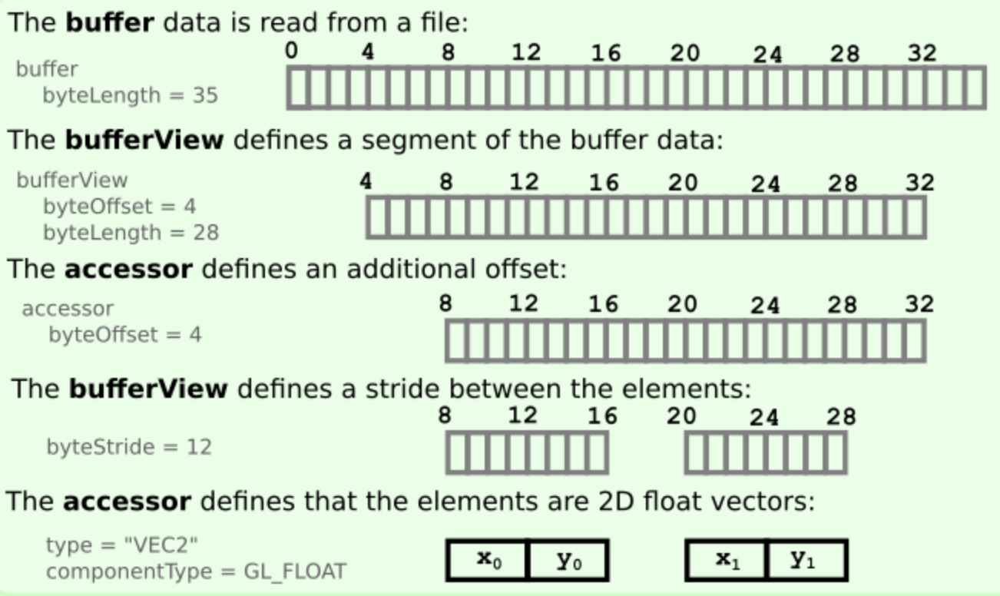
위의 경우를 예시로 들면, 해당 데이터는 2D 텍스쳐 좌표에 엑세스하기 위한 메쉬 프리미티브로써 사용될 수 있다.
bufferView 데이터는 glBindBuffer를 사용하여 OpenGL buffer로 바운드할 수 있다.
이 경우, accessor의 프로퍼티들은 glVertexAttribPointer에 전달하여 bufferView의 buffer가 바운딩 되었을 때, 이 buffer를 버텍스 어트리뷰트 데이터로 정의하기 위해 사용될 수 있다.
Sparse Accessors
액세서의 일부 요소만이 기본값과는 다른 경우, (주로 모프 타겟에서) sparse를 통해 매우 컴팩트하게 데이터를 전달할 수 있다.
액세서는 데이터의 타입(여기서는 스칼라 float값)과 전체 요소의 count를 정의한다.
sparse 데이터는 sparse 데이터 블록이 포함하는 sparse 데이터 요소의 count를 포함한다.
values는 sparse 데이터 값을 포함하는 bufferView를 참조한다.
sparse 데이터 값에 대한 타겟 indices는 bufferView와 componentType에 대한 참조로 정의된다.
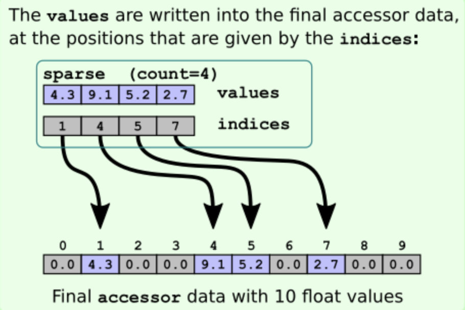
위의 예시 이미지 처럼, values는 주어진 indices의 위치에 따라 최종 액세서 데이터를 덮어씌운다.
materials
각 메쉬 프리미티브는 glTF 에셋 내에 포함된 머테리얼(material) 중 하나를 참조할 수 있다. 머테리얼은 오브젝트가 어떻게 렌더링 되어야 하는지에 대해 물리적 머테리얼 속성들에 기반하여 정의한다. 이를 통해 PBR(Physically Based Rendering) 테크닉을 적용할 수 있으며, 저마다 다른 렌더러들 간에도 렌더된 오브젝트의 형상이 일정하도록 보장해준다.
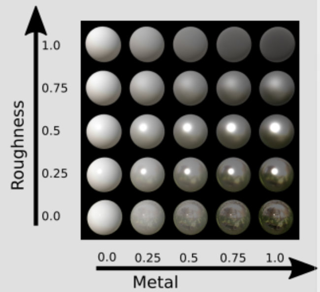
기본 머테리얼 모델은 Metallic-Roughness-Model이며, 이는 각각 0에서 1 사이의 값으로 오브젝트의 표면이 얼마나 금속같은지, 얼마나 거친지에 대한 재질 특성을 나타낸다.
이 속성들은 오브젝트 전체에 단일한 값으로 적용될 수도 있고, 텍스처에 의해 참조될 수도 있다.
"materials": [
{
"pbrMetallicRoughness": {
"baseColorTexture": {
"index": 1,
"texCoord": 1
},
"baseColorFactor": [1.0, 0.75, 0.35, 1.0],
"metallicRoughnessTexture": {
"index": 5,
"texCoord": 1,
},
"metallicFactor": 1.0,
"roughnessFactor": 0.0,
},
"normalTexture": {
"scale": 0.8,
"index": 2,
"texCoord": 1
},
"occlusionTexture": {
"strength": 0.9,
"index": 4,
"texCoord": 1
},
"emissiveTexture": {
"index": 3,
"texCoord": 1
},
"emissiveFactor": [0.4, 0.8, 0.6]
}
]
Metallic-Roughness-Model 머테리얼은 pbrMetallicRoughness 객체에 정의된다.
baseColorTexture는 오브젝트에 적용될 메인 텍스처다. baseColorFactor는 색의 RGBA에 대한 스케일링 팩터를 담고 있다. 따로 텍스처가 사용되지 않는다면, 오브젝트 전체가 해당 색이 적용될 것이다.
metallicRoughnessTexture는 "blue" 컬러 채널에 metalness 값을, "green" 컬러 채널에 roughness 값을 담고 있는 텍스처를 의미한다. metallicFactor와 roughnessFactor는 이러한 값에 해당 수치 만큼 곱셈을 적용한다. 따로 텍스처가 주어지지 않는다면, 오브젝트 전체에 해당 reflection 특성이 적용된다.
Metallic-Roughness-Model을 통해 정의된 프로퍼티들에 더해, 머테리얼은 오브젝트 형상에 적용될 다른 프로퍼티들도 포함할 수 있다.
- normalTexture는 접선공간(tangent-space)의 법선 정보를 담고 있는 텍스처를 참조하며, 이러한 노말에 적용될 scale 팩터가 같이 사용된다.
- occlusionTexture는 빛으로부터 차단되어(occluded) 더 어둡게 렌더되어야 하는 표면 영역에 대한 텍스처를 참조한다. 해당 정보는 텍스처의 "red" 컬러 채널을 사용한다. 오클루전의 strengh는 해당 값에 적용될 스케일링 팩터의 역할을 한다.
- emessiveTexture는 오브젝트 표면에서 발광(illuminate)을 일으키는 부분을 나타내는 텍스처를 참조하며, 해당 텍스처에서는 표면에서 빛나게 될 부분과, 그 빛의 색을 정의한다. emissiveFactor는 이 텍스처의 RGB에 곱해지는 스케일링 팩터에 해당한다.
Material Properties in textures
"meshes": [
{
"primitives": [
{
"material": 2, // 아래의 index 2에 해당하는 `brushed gold` 머테리얼을 참조
"attributes": {
"NORMAL": 3,
"POSITION": 1,
"TEXCOORD_0": 2,
"TEXCOORD_1": 5 // 아래 머테리얼의 `pbrMetallicRoughness.baseColorTexture.texCoord`에 의해 참조
},
}
]
}
]
"materials": [
...
{
"name": "brushed gold",
"pbrMetallicRoughness": {
"baseColorFactor": [1, 1, 1, 1],
"baseColorTexture": {
"index": 1, // 아래 쪽의 index 1의 텍스처를 참조
"texCoord": 1 // 위의 `TEXCOORD_1`을 참조
},
"metallicFactor": 1.0,
"roughnessFactor": 1.0
}
}
]
"textures": [
...
{ // 해당 텍스처는 위쪽의 `material.baseColorTexture.index`에 의해 참조됨
"source": 4,
"sampler": 2
}
]
하나의 머테리얼 내 텍스처 참조는 항상 텍스처의 index를 포함해야 한다.
또, 특정 index가 설정된 texCoord를 포함하기도 한다.
이는 해당 텍스처의 텍스처 좌표(coordinate)를 포함하는 메쉬 프리미티브의 어트리뷰트(TEXCOORD_<n>)를 결정하는 값이며, 이는 기본값으로는 0이다.
Cameras
각 노드에 glTF 에셋에 정의된 카메라 중 하나를 참조할 수 있다.
"cameras": [
{
"type": "perspective",
"perspective": {
"aspectRatio": 1.5,
"yfov": 0.65,
"zfar": 100,
"znear": 0.01
}
},
{
"type": "orthographic",
"orthographic": {
"xmag": 1.0,
"ymag": 1.0,
"zfar": 100,
"znear": 0.01
}
}
]
카메라에는 두가지 타입, perspective와 orthographic이 있으며, 이는 프로젝션 매트릭스(projection matrix)를 정의한다.
zfar는 perspective 카메라의 far clipping plane 거리의 값에 해당하며, 이는 옵셔널하다. 해당 값이 없다면, 카메라가 무한한 프로젝션에 사용되는 특별한 프로젝션 매트릭스를 사용된다.
한 노드가 한 카메라를 참조할 때, 카메라 인스턴스가 생성된다. 이 인스턴스의 카메라 매트릭스는 곧 노드의 전역 트랜스폼 매트릭스에 전달된다.
Textures, Images, Samplers
textures는 렌더될 오브젝트에 적용될 텍스처에 대한 정보를 담는다. 머테리얼은 오브젝트의 기본 컬러 뿐만 아니라 오브젝트 형상에 영향을 미칠 물리적 속성을 정의하기 위해서 텍스처를 참조한다.
"textures": [
{
"source": 4, // 아래의 index 4에 해당하는 `file01.png` 이미지를 참조
"sampler": 2 // 아래의 index 2에 해당하는 `samplers`를 참조
}
...
]
"images": [
...
{
"uri": "file01.png"
},
{
"bufferView": 3,
"mimeType": "image/jpeg"
}
]
"samplers": [
...
{
"magFilter": 9729,
"minFilter": 9987,
"wrapS": 10497,
"wrapT": 10497
}
]
텍스처는 에셋 이미지 중 하나를 가리키는 텍스처 소스(source)에 대한 참조와, 샘플러(sampler)에 대한 참조로 구성된다.
images는 텍스처에 사용될 이미지 데이터를 정의한다. 이 데이터는 이미지 파일 위치를 가리키는 uri 속성을 통해 참조할 수도 있고, bufferView에 대한 참조와 버퍼 뷰에 저장된 이미지 데이터의 타입을 정의하는 MIME Type 속성을 통해 참조할 수도 있다.
samplers는 텍스처의 스케일링과 텍스처 좌표의 래핑을 정의한다. (= glTexParameter에 넘겨지는 OpenGL 상수값)
Skins
glTF 에셋은 버텍스 스키닝을 수행하는 데에 있어 필수적인 정보들을 담을 수 있다. 버텍스 스키닝은 현재 pose에 기반한 스켈레톤의 bones에 따라 메쉬의 버텍스를 변형할 수 있도록 해준다.
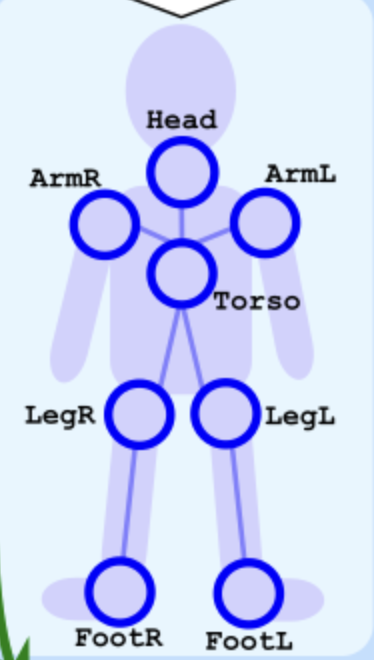
"nodes": [
{
"name": "Skinned mesh node",
"mesh": 0,
"skin": 0,
},
...
{
"name": "Torso",
"children": [2, 3, 4, 5, 6],
"rotation": [...],
"scale": [...],
"translation": [...]
},
...
{
"name": "LegL",
"children": [7],
},
...
{
"name": "FootL",
...
},
...
],
"meshes": [
"primitives": [
{ // 위쪽 첫번째 노드인 "Skinned mesh node"가 참조하는 mesh
"attributes": {
"POSITION": 0,
"JOINTS_0": 1,
"WEIGHTS_0": 2
...
}
}
]
]
"skins": [
{ // 위쪽 첫번째 노드인 "Skinned mesh node"가 참조하는 skin
"inverseBindMatrices": 12,
"joints": [1, 2, 3 ...],
}
]
하나의 노드는 mesh를 참조할 수 있고, 또한 skin을 참조할 수도 있다.
skins는 joints의 배열을 담고 있으며, 이는 스켈레톤 구조를 정의하는 노드들의 인덱스를 의미한다. 또, inverseBindMatrices는 각 joint 당 하나의 매트릭스를 포함하는 액세서에 대한 참조를 의미한다.
스켈레톤 구조는 씬 구조와 마찬가지로 노드에 의해 구성된다. 각 joint 노드는 로컬 트랜스폼과 자식 배열, 그리고 joint 간의 연결로서 스켈레톤의 "뼈대(bones)"를 간접적으로 정의한다.
스키닝된 메쉬의 메쉬 프리미티브는 POSITION 어트리뷰트를 가지는데, 이는 버텍스 위치에 대한 액세서를 나타낸다.
그 외에 두가지 특별한 어트리뷰트가 스키닝에 요구되는데, 이는 JOINTS_0와 WEIGHTS_0이다. 이는 각각 하나의 액세서를 참조한다.
JOINT_0 어트리뷰트 데이터는 버텍스에 영향을 주어야 하는 joint의 인덱스를 나타내는 값이다.
WEIGHT_0 어트리뷰트 데이터는 버텍스에 영향을 주어야 하는 joint의 가중치를 나타내는 값열이다.
이러한 정보들을 바탕으로, 스키닝 매트릭스(skinning matrix)가 계산될 수 있다. 이에 대한 디테일은 아래의 Computing the skinning matrix 섹션에서 설명한다.
Computing the skinning matrix
스키닝 매트릭스는 스켈레톤의 현재 포즈에 기반하여 메쉬의 버텍스가 어떻게 변형될지를 나타내는 매트릭스이다. 스키닝 매트릭스는 조인트 매트릭스(joint matrix)들의 가중치를 적용한 합에 해당한다.
Computing the joint matrices
스킨은 inverseBindMatrices를 참조한다. 이는 각 joint에 대한 역행렬을 포함하는 액세서를 나타낸다. 이 매트릭스들은 메쉬를 조인트의 로컬 공간으로 변환시키는 데 사용된다.
스킨의 joints에 포함된 인덱스에 해당하는 각각의 노드에 대해, 전역 트랜스폼 매트릭스를 계산할 수 있다. 이는 조인트의 현재 글로벌 트랜스폼을 기반으로 조인트의 로컬 공간으로부터 메쉬를 변형하며, 이를 globalJointTransform이라고 한다.
이 매트릭스들로부터, jointMatrix는 각 조인트에 대해 다음과 같이 계산될 수 있다.
jointMatrix[j] = inverse(globalTransform) * globalJointTransform[j] * inverseBindMatrix[j]
![inverseBindMatrix[1]](image-7.png)
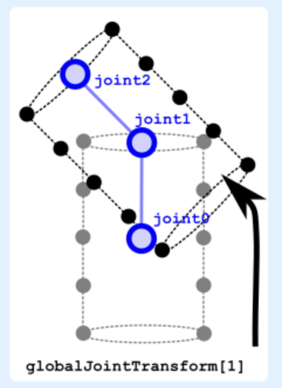
메쉬와 스킨을 포함하는 노드의 모든 글로벌 트랜스폼은 조인트 행렬에 이 트랜스폼의 역을 미리 곱하여 상쇄한다.
OpenGL 또는 WebGL에 기반한 구현의 경우, jointMatrix 배열은 버텍스 셰이더에 유니폼으로서 전달된다.
Combining the joint matrices to create the skinning matrix
스키닝된 메쉬의 프리미티브는 POSITION, JOINT, WEIGHT 어트리뷰트들을 포함하며, 이들은 모두 액세서들을 참조한다.
이 액세서들은 각 버텍스마다 하나의 요소를 포함한다.
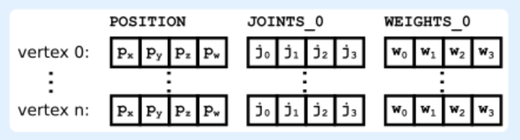
이 액세서들의 데이터는 jointMatrix 배열과 함께 버텍스 셰이더에 어트리뷰트로 전달된다.
버텍스 셰이더에서는 skinMatrix가 계산된다.
이는 인덱스가 JOINTS_0 어트리뷰트에 포함된 조인트 행렬의 선형 조합(linear combination)으로, WEIGHTS_0값으로 가중치가 부여된다.
// Vertex Shader
uniform mat4 u_jointMatrix[12];
attribute vec4 a_position;
attribute vec4 a_joint;
attribute vec4 a_weight;
...
void main(void) {
...
mat4 skinMatrix =
a_weight.x * u_jointMatrix[int(a_joint.x)] +
a_weight.y * u_jointMatrix[int(a_joint.y)] +
a_weight.z * u_jointMatrix[int(a_joint.z)] +
a_weight.w * u_jointMatrix[int(a_joint.w)];
gl_Position = modelViewProjection * skinMatrix * position;
}
model-view-perspective 매트릭스로 변형하기 전에, skinMatrix가 먼저 스켈레톤 포즈에 기반하여 버텍스를 변형한다.
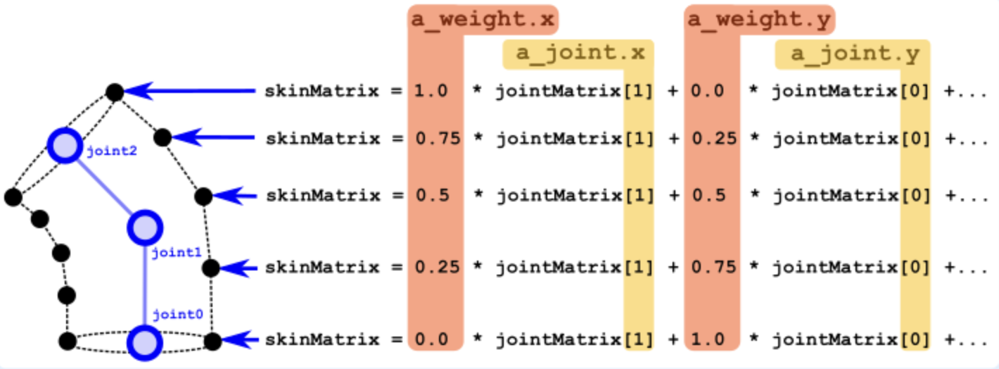
Animations
glTF 에셋은 애니메이션(animations)을 포함할 수 있다. 애니메이션은 노드의 로컬 트랜스폼이 정의된 노드의 프로퍼티 또는 모프 깃의 가중치에 적용될 수 있다.
"animations": [
{
"channels": [
{
"target": {
"node": 1,
"path": "translation"
},
"sampler": 0 // 아래의 samplers[0]을 참조
}
],
"samplers": [
{
"input": 4,
"interpolation": "LINEAR",
"output": 5
}
]
}
]
각각의 애니메이션은 두 요소를 갖는다. 하나의 채널(channels) 배열과 하나의 샘플러(samplers) 배열이다.
각 채널은 애니메이션의 타겟(target)을 정의한다. 이 타겟은 대부분 인덱스를 통해 하나의 노드(node)를 참조하고, 패스(path)는 해당 노드의 어떤 프로퍼티가 애니메이션의 대상인지를 정의한다.
패스는 노드에 로컬 트랜스폼을 적용하는 translation, rotation, 또는 scale이 되거나, 또는 노드에 의해 참조되는 메쉬의 모프 타겟의 가중치에 애니메이션을 적용하기 위해선 weights가 된다.
채널은 또한 하나의 샘플러(sampler)를 참조하며, 이는 실제 애니메이션 데이터를 요약한다.
샘플러는 입력(input)과 출력(output)을 가지며, 데이터를 제공하는 액세서의 인덱스를 통해 참조한다.
input은 스칼라 부동소수점을 가진 액세서를 참조하며, 애니메이션의 키프레임에 해당하는 시간들에 해당한다.
output은 각 키프레임에서 애니메이션이 적용되는 프로퍼티 값을 담고 있는 액세서를 참조한다.
샘플러는 또한 애니메이션의 보간(interpolation) 모드를 정의하며, 여기서는 LINEAR, STEP, CUBICSPLINE이 될 수 있다.
Animation samplers
애니메이션이 진행되는 동안에, "전역(global)" 애니메이션 시간이 초 단위로 증가한다.
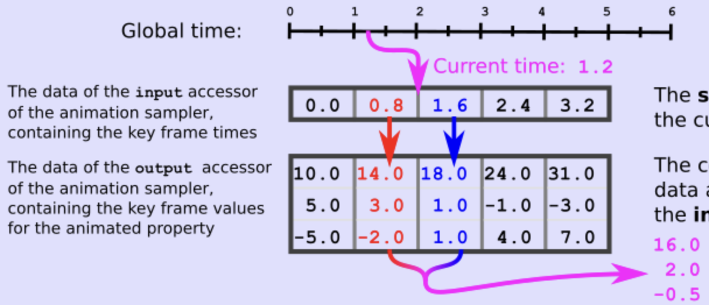
애니메이션 샘플러의 input 액세서의 데이터는 키 프레임 시간을 담고있다.
애니메이션 샘플러의 output 액세서의 데이터는 애니메이션이 적용된 프로퍼티의 키 프레임 값을 담고있다.
sampler는 input 데이터에서 현재 시간에 대한 키프레임을 탐색한다.
output 데이터에서 해당 키프레임에 상응하는 데이터를 읽고, 샘플러의 interpolation 모드에 따라 적절한 방식으로 보간한다.
보간된 값은 애니메이션 채널의 타겟에 적용된다.
Animation channel targets
애니메이션 샘플러로부터 전달되는 보간된 값은 다른 형태의 애니메이션 채널 타겟에 따라 다른 형태로 적용된다.
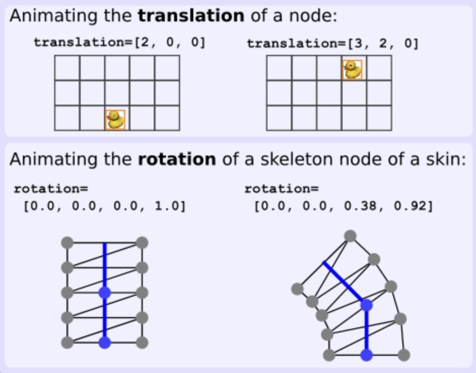
노드에 연결된 메쉬의 프리미티브에 정의된 모프 타깃에 적용된 weights 애니메이션은 다음과 같은 형태로 동작한다.
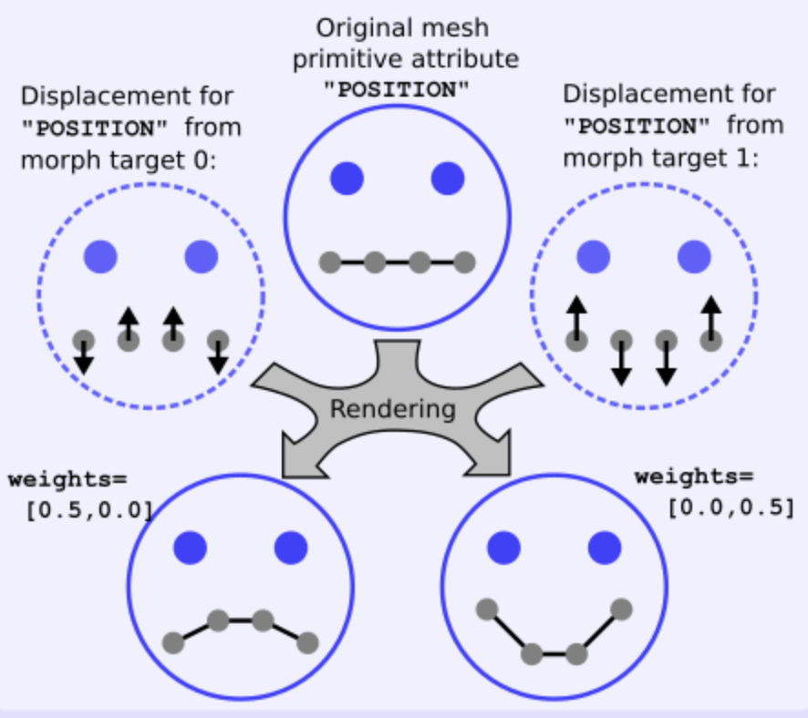